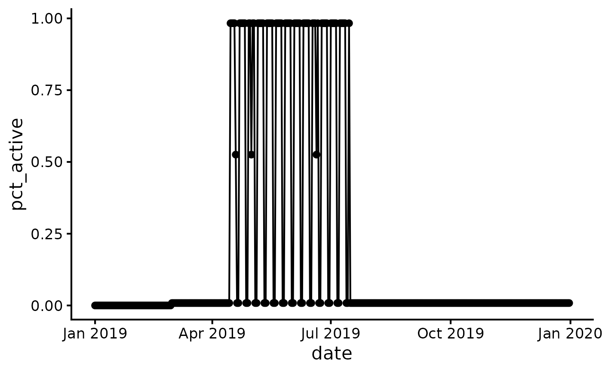

R/check_transit_availability.R
check_transit_availability.RdThis function checks the number and proportion of public transport services
from the GTFS feeds in a r5r_network that are active on specified dates. This
is useful to verify that the selected departure dates for routing analysis are
valid and have adequate service levels. When routing with public transport, it
is crucial to use a departure date where services are operational, as indicated
in the GTFS calendar.txt file.
check_transit_availability(
r5r_network,
r5r_core = deprecated(),
dates = NULL,
start_date = NULL,
end_date = NULL
)A routable transport network created with build_network().
The r5r_core argument is deprecated as of r5r v2.3.0. Please use the r5r_network argument instead.
A vector of specific dates to be checked. Can be character strings
in #' "YYYY-MM-DD" format, or objects of class Date. This argument
cannot be used with start_date or end_date.
The start date for a continuous date range. Must be a single
character string in "YYYY-MM-DD" format or a Date object. Must be used
with end_date.
The end date for a continuous date range. Must be a single
character string in "YYYY-MM-DD" format or a Date object. Must be used
with start_date.
A data.table with four columns: date, total_services,
active_services, and pct_active (the proportion of active services).
You can specify the dates to check in two ways:
Using the dates argument to provide a vector of specific dates.
Using the start_date and end_date arguments to provide a continuous date range.
You must use one of these two methods, but not both in the same function call.
library(r5r)
data_path <- system.file("extdata/poa", package = "r5r")
r5r_network <- build_network(data_path)
#> ℹ Using cached network from
#> /home/runner/work/_temp/Library/r5r/extdata/poa/network.dat.
# Example 1: Check a vector of specific dates
# Let's check a regular weekday and a Sunday, where service may differ.
dates_to_check <- c("2019-05-13", "2019-05-19")
availability1 <- check_transit_availability(r5r_network, dates = dates_to_check)
availability1
#> date total_services active_services pct_active
#> <Date> <int> <int> <num>
#> 1: 2019-05-13 118 116 0.983050847
#> 2: 2019-05-19 118 1 0.008474576
# Example 2: Check a continuous date range using start_date and end_date
availability2 <- check_transit_availability(
r5r_network,
start_date = "2019-01-01",
end_date = "2019-12-31"
)
availability2[121:124,]
#> date total_services active_services pct_active
#> <Date> <int> <int> <num>
#> 1: 2019-05-01 118 62 0.525423729
#> 2: 2019-05-02 118 116 0.983050847
#> 3: 2019-05-03 118 116 0.983050847
#> 4: 2019-05-04 118 1 0.008474576
# plot availability over the year
library(ggplot2)
ggplot(availability2, aes(x = date, y = pct_active)) +
geom_line() +
geom_point() +
theme_classic(base_size = 16)

stop_r5(r5r_network)
#> r5r_network has been successfully stopped.